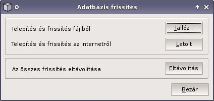

| Telepítés és frissítés fáljból | telepíti a letöltött adatcsomagot (cxedf-tubes-000000-xx.zip) |
| Telepítés és frissítés az internetrõl | közvetlenül az internetrõl telepíti az adatcsomagot |
| Az összes frissítés eltávolítása | eltávolítja az összes adatfájlt a felhasználó könyvtárából |